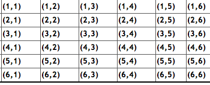
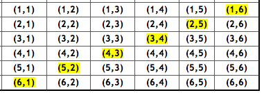
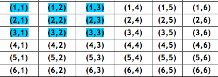
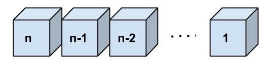
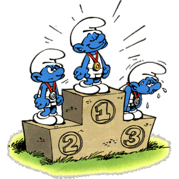
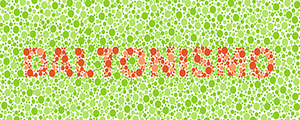
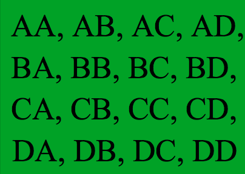
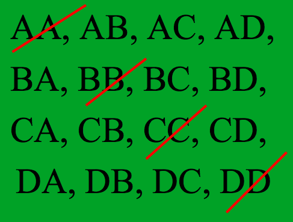
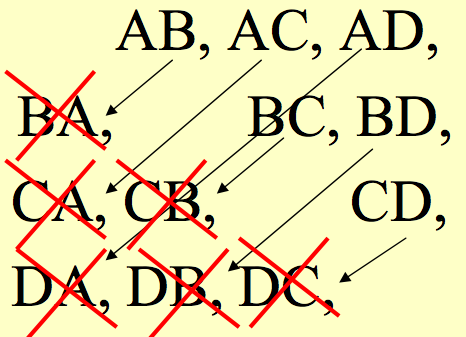

Lançar 3 moedas honestas simultaneamente, e observar a face voltada para cima.
\[\Omega= \{ (CCC), (CCX),(CXC),(XCC),(XXC),(XCX),(CXX),(XXX)\}\]
Moedas honestas, então cada elemento do espaço amostral tem igual probabilidade de ocorrer: 1/8
Qual é a probabilidade de obtermos 3 caras?
\(A=\{(CCC)\}\)
\[P(A)=\frac{\mbox{número de elementos em A}}{\mbox{número de elementos em $\Omega$}}= \frac{1}{8}\]
Qual a probabilidade de obtermos pelo menos 2 caras?
\(B=\{(CCC),(CCX),(CXC),(XCC)\}\)
\[P(B)=\frac{\mbox{número de elementos em B}}{\mbox{número de elementos em $\Omega$}}= \frac{4}{8}=\frac{1}{2}\]
Dois dados honestos são lançados simultaneamente
O jogador deve escolher uma das duas opções antes do lançamento dos dados. Caso a opção escolhida ocorra, ele será o vencedor.
As duas opções são:
Qual das duas possibilidades ele deve escolher?
Espaço amostral:

Dados honestos, então cada elemento do espaço amostral tem igual probabilidade de ocorrer: 1/36
\(A=\{\mbox{conjunto dos pares (i,j) tais que i+j=7}\}\)

\(A=\{(1,6),(2,5),(3,4),(4,3),(5,2),(6,1)\}\)
\[P(A)=\frac{\mbox{número de elementos em A}}{\mbox{número de elementos em $\Omega$}}=\frac{6}{36}\]
\(B=\{\mbox{conjunto dos pares (i,j) tais que } i \leq 3 \mbox{ e } j \leq 3 \}\)

\(B=\{(1,1),(1,2),(1,3),(2,1),(2,2),(2,3),(3,1),(3,2),(3,3)\}\)
\[P(B)=\frac{\mbox{número de elementos em B}}{\mbox{número de elementos em $\Omega$}}=\frac{9}{36}=\frac{1}{4}\]
Como \(P(A)<P(B)\) é mais vantajoso escolher a opção "maior valor seja no máximo 3"
\[P(A)=\frac{\mbox{número de elementos no evento A}}{\mbox{número de elementos no espaço amostral}}.\]
Exemplo: Em um grupo de 100 pessoas, 2 são daltônicas. Dez pessoas são escolhidas ao acaso e sem reposição. Qual a probabilidade de escolhermos apenas uma pessoa daltônica?
De quantas maneiras podemos selecionar 10 pessoas a partir de um grupo de 100 pessoas, sem reposição?
O procedimento \(P_1\) tem \(n_1\) formas de ser executado e o procedimento \(P_2\) tem \(n_2\) formas de ser executado.
O total de maneiras para executarmos a tarefa é então dado por \(n_1+n_2\).
Quantas opções você tem no total?
Você pode escolher torta OU sorvete, então existem \(2+3= 5\) opções de sobremesa.
O procedimento \(P_1\) tem \(n_1\) formas de ser executado e o procedimento \(P_2\) tem \(n_2\) formas de ser executado.
O total de maneiras para executarmos a tarefa é dado por \(n_1 \times n_2\).
Exemplo: Você vai no Spoleto e vê no cardápio "Monte sua Massa".
| Tipo de Massa | Tamanho | Molho | Gratinar? |
|---|---|---|---|
| Farfale | Bambini | Bolognesa | Sim |
| Fettuccine | Normal | Branco | Não |
| Fusili Integrale | Mamma | Funghi | |
| Penne | 4 Queijos | ||
| Spaghetti | Tomate |
Quantas opções de pratos você têm no total?
Você pode criar \(5 \times 3 \times 5 \times 2= 150\) pratos diferentes.
Apenas aos sábados, o restaurante oferece a "Torta da Casa", que é uma torta com sorvete em cima. Aos sábados, quantas opções de sobremesa você?
De quantas formas diferentes podemos escolher a placa de um carro, tendo essa 3 letras e 4 números?
\[ 26 \times 26 \times 26 \times 10 \times 10 \times 10 \times 10 = 175.760.000\]
E se não pudesse haver repetição de letras e números? \[ 26 × 25 × 24 × 10 × 9 × 8 × 7 = 78.624.000\]

Aplicando a regra da multiplicação, temos que o número de maneiras de permutar \(n\) elementos é: \[n\times(n-1)\times\ldots\times1=n!\]
\[3! = 3 \times 2 \times 1 = 6 \]
Ou seja, temos as seguintes permutações: \(abc, acb, bac, bca, cab, cba\).
\[ 1 \times 6! \times 2 = 1440\]
Suponha que queremos permutar \(n\) objetos, mas alguns deles são indistinguíveis.
Exemplo: Quantos anagramas podemos formar com a palavra PEPPER?
Seria \(6! = 720\), certo?
Mas note que P1E1P2P3E2R = P2E1P1P3E2R
Na verdade, existem \(3! 2! = 12\) permutações quer resultam no mesmo anagrama
Portanto, o número de possíveis anagramas distintos é:
\[\frac{6!}{3!2!} = 60\]
Aplicando a regra da multiplicação, temos que o número de maneiras de arranjar \(n\) elementos em \(r\) caixas é: \[n \times(n-1) \times \ldots \times (n-r+1) = \frac{n!}{(n-r)!} = A(n,r)\]
\[A(4, 2) = \frac{4!}{(4-2)!} = 12\]
Que seriam o seguinte: \(ab,ac,ad,ba,bc,bd,ca,cb,cd,da,db,dc\).
\[\frac{n!}{r!(n-r)!}=\binom{n}{r}=C(n,r)\]
\[ C(4, 2) = \binom{4}{2} = 6\]
Que seriam o seguinte: \(ab,ac,ad,bc,bd,cd\).
Sete atletas estão competindo nas olimpíadas. O pódium tem 3 lugares: ouro, prata e bronze. Quantos pódiuns podem ser feitos?

\[7 \times 6 \times 5 = 210\]
\[A(7,3)=\frac{7!}{(7-3)!}= 210\]
\[C(7,3)=\frac{7!}{3!(7-3)!}= 35\]

Em um grupo de 100 pessoas, 2 são daltônicas. Dez pessoas são escolhidas ao acaso e sem reposição. Qual a probabilidade de escolhermos apenas uma pessoa daltônica?
De quantas maneiras podemos selecionar 10 pessoas a partir de um grupo de 100 pessoas, sem reposição?
\[C(100,10)=\binom{100}{10}\]
De quantas maneiras podemos selecionar 1 pessoa a partir de um grupo de 2 pessoas daltônicas?
\[C(2,1)=\binom{2}{1}\]
Em um grupo de 100 pessoas, 2 são daltônicas. Dez pessoas são escolhidas ao acaso e sem reposição. Qual a probabilidade de escolhermos apenas uma pessoa daltônica?
De quantas maneiras podemos selecionar 9 pessoas a partir de um grupo de 98 pessoas com visão normal?
\[C(98,9)=\binom{98}{9}\]
Então, a probabilidade de escolhermos apenas uma pessoa daltônica: \[\frac{\binom{2}{1}\binom{98}{9}}{\binom{100}{10}}\]
Uma caixa contém 2 bolas vermelhas, 3 verdes e 2 azuis. Duas bolas são selecionadas aleatoriamente. Qual a probabilidade de que nenhuma bola seja azul?
\[C(5,2)=\frac{5!}{2!(5-2)!}=10\]
\[P(A)=\frac{10}{21}\]
Em uma classe, há 15 meninos e 10 meninas. Três alunos são selecionados ao acaso. Qual a probabilidade de sortear 1 menina e 2 meninos?
\(C(10,1) = \frac{10!}{1!(10-1)!}= 10 \;\;\;\;\;\) e \(\;\;\;\;\; C(15,2) = \frac{15!}{2!(15-2)!}= 105\)
Número de elementos em \(A\)= \(C(10,1)\) x \(C(15,2) = 1050\).
\[P(A)=\frac{1050}{2300}=\frac{21}{46}\]
Uma sacola tem 4 bolas brancas, 5 vermelhas e 6 azuis. Três bolas são selecionadas ao acaso da sacola. Qual a probabilidade de que todas elas sejam vermelhas?
\[C(5, 3)=\frac{5!}{3!(5-3)!}=10\]
\[P(A)=\frac{10}{455}=\frac{2}{91}\]
Nessa sala com mais de 100 alunos, quantas pessoas vocês acham que fazem aniversário no mesmo dia?
Eu aposto que existem pelo menos um par de pessoas que fazem aniversário no mesmo dia!!!
Vamos verificar?
Para calcular a probabilidade de que em uma sala com \(n\) pessoas, pelo menos duas possuam o mesmo aniversário: desprezamos variações na distribuição, tais como anos bissextos, gêmeos, variações sazonais ou semanais, e assumimos que 365 possíveis aniversários são todos igualmente prováveis.
É mais fácil calcular a probabilidade do evento \(A\), definido como todos os \(n\) aniversários são diferentes:
\[\begin{eqnarray} P(A)&=&1\cdot \left(1-{\frac {1}{365}}\right)\cdot \left(1-{\frac {2}{365}}\right)\cdots \left(1-{\frac {n-1}{365}}\right)\\ &=&{365\cdot 364\cdots (365-n+1) \over 365^{n}}\\ &=&{365! \over 365^{n}(365-n)!} \end{eqnarray}\]
A segunda pessoa não pode ter o mesmo aniversário do que o primeiro (364/365), o terceiro não pode ter o mesmo aniversário do que o segundo (363/365), etc.
O evento de pelo menos duas pessoas entre \(n\) terem o mesmo aniversário (chamaremos de evento \(B\)) é o complementar de todos \(n\) serem diferentes (evento \(A\)).
Consequentemente, sua probabilidade é:
\[P(B)=1-P(A)\]
Qual é a probabilidade de pelo menos uma coincidência?
Amostragem Aleatória Simples (AAS) é um plano amostral no qual \(n\) unidades são selecionadas de uma lista com \(N\) unidades, de tal forma que cada combinação possível das \(n\) unidades tenha a mesma probabilidade de ser selecionada.
Há dois tipos de AAS:
Número de amostras possíveis de \(n\) elementos de uma população de \(N\).
Exemplo: amostra de tamanho \(n=2\) de uma população de tamanho \(N=4\).
Elementos da população: {A, B, C, D}
Usando \(AAS_c\), podemos obter: \(4^2=16\) amostras diferentes.

Exemplo: amostra de tamanho \(n=2\) de uma população de tamanho \(N=4\).
Elementos da população: {A, B, C, D}
Usando \(AAS_s\), ordenada, podemos obter: \(4!/(4-2)!=12\) amostras diferentes.

Exemplo: amostra de tamanho \(n=2\) de uma população de tamanho \(N=4\).
Elementos da população: {A, B, C, D}
Usando \(AAS_s\), não-ordenada, podemos obter: \(\binom{4}{2}=6\) amostras diferentes.

\(AAS\): todas as amostras têm a mesma probabilidade de serem selecionadas.
A probabilidade de se selecionar cada amostra de tamanho \(n\) é:
Uma comissão formada por 3 estudantes tem que ser selecionada numa classe de 20 alunos.
De quantas formas diferentes pode ser selecionada essa comissão?
\[C(20,3)=\binom{20}{3}=\frac{20!}{3! (20-3)!}= 1140\]
(sem reposição e ordem não importa)
Um ônibus possui 10 assentos disponíveis.
De quantas formas 7 passageiros podem ocupar os assentos?
\[ \frac{10!}{(10-7)!}=\frac{10!}{3!}=10\times9\times8\times7\times6\times5\times4=604800\]
(sem reposição e ordem importa)
Quantos números de 4 dígitos podemos formar com os dígitos 1, 2, 3, 4, 5, 6?
\(6 ^4=1296\) (com reposição)
Qual a probabilidade de se escolher um número dentre os 1296 e este possuir os dois primeiros dígitos iguais entre si, e os dois últimos, diferentes desses primeiros?
A probabilidade é
\[\frac{6 \times 1 \times 5 \times 5}{1296}= \frac{25}{216} \approx 0.12\]
Slides produzidos pelos professores:
Samara Kiihl
Tatiana Benaglia
Benilton Carvalho